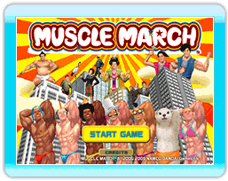
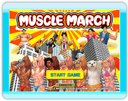
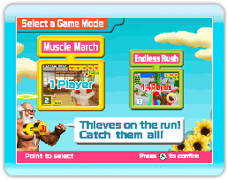
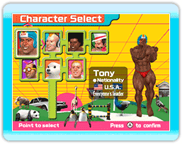
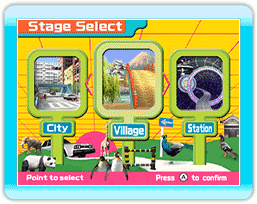
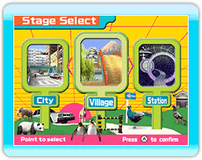
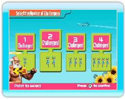

- Het spel starten
In het titelscherm, druk je op  . Om het spel te beginnen, richt je met de Wii-afstandsbediening op 'START GAME' of selecteer je het met
. Om het spel te beginnen, richt je met de Wii-afstandsbediening op 'START GAME' of selecteer je het met  en druk je op .
en druk je op .
- Modusselectiescherm
Je kunt uit twee verschillende spelmodi kiezen.
1. Selecteer een personage
Selecteer een personage om mee te spelen. Je kunt uit zeven verschillende personages kiezen.
2. Selecteer een niveau
Selecteer een niveau om op te spelen. Je kunt uit drie verschillende niveaus kiezen.

 

1. Selecteer het aantal spelers
Selecteer het aantal spelers dat meedoet.  Er kunnen maximaal vier spelers met dezelfde Wii-afstandsbediening en een Nunchuk meedoen.
- Stoppen met spelen
Druk tijdens het spel op om het HOME-menu weer te geven. Vanuit daar kies je 'Wii-menu' om het spel af te sluiten.